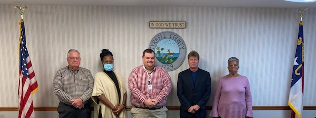

County Departments
Connect with Tyrrell County departments, officials, and staff to access the services you need.
Board of County Commissioners

- Chairman: Nathan T. Everett
- Vice Chairman: Nina B. Griswell
- County Manager: David L. Clegg
- Clerk to the Board: Penny Rhodes Owens
- County Attorney: David L. Clegg
- County Commissioner: Jordan R. Davis
- County Commissioner: Dorothy Spencer
- County Commissioner: Robert Thompson
Department Directory
Detailed Contact Information
Administration Assistant
Penny Rhodes Owens - Clerk to the Board, Assistant to County Manager/Attorney
252-796-1371, ext. 2621
Buildings & Grounds/Emergency Management
Wesley Hopkins - Maintenance Supervisor/Emergency Management Coordinator
252-796-1371, ext. 2613
Building Inspections
Joie Spencer - Building Inspector, Fire Marshal, Ordinance Enforcement
252-796-1371, ext. 2673
Department of Social Services
Valerie Phelps - Director
252-796-3421, ext. 2653
EMS
Jennifer Allen O'Neal - EMS Director
252-793-7636 (office)
252-217-2266 (cell)